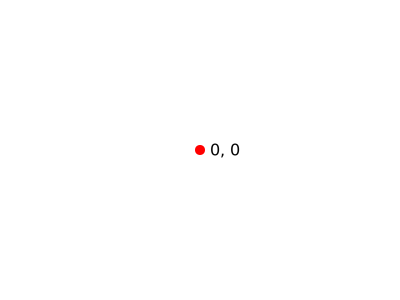
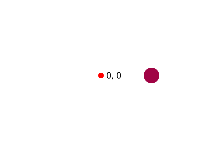
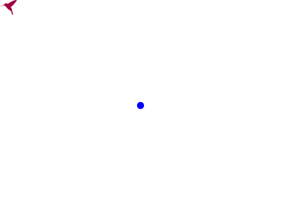
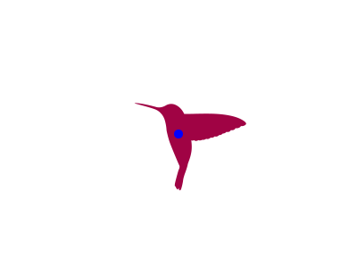
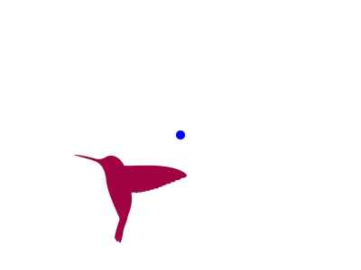

Vector transformations
Vector math
You can control the position of elements like Circle, Ellipse, Rect, Text, and even groups (G) using vector operations. In the case of a G element, vectors are additionally used to control scaling and the pivot point for rotation.
Consider the following example:
from pydreamplet import Circle, G, SVG, Text, Vector
svg = SVG(400, 300)
origin = G(id="origin")
svg.append(origin)
origin.append(
Circle(cx=0, cy=0, r=5, fill="red"),
Text("0, 0", x=10, y=0, dominant_baseline="middle"),
)
The SVG’s origin is at the top left, so much of the content is off-screen. To center it, you can transform the origin (<g> element) like so:

Now let’s add a circle relative to the new origin. We define a vector for its position:

Next, you can use vector math to add additional circles evenly spaced around the origin. By incrementing the vector’s direction by 72° each time, you form a ring of 5 circles:
for _ in range(4):
circle_pos.direction += 72
origin.append(Circle(pos=circle_pos, r=15, fill="#a00344"))

Transformation order
When combining multiple transformations—translation, rotation, and scaling—the order in which they are applied is critical. In the pydreamplet library, the transformation order is controlled by the order property on a group (or container) element.
Initial setup
First, we load an SVG file containing a hummingbird, change its fill color, and then add it to an SVG canvas:
from importlib.resources import files
from pydreamplet import SVG, G, resources, Vector
# Load the hummingbird SVG and change its fill color
hummingbird = SVG.from_file(files(resources) / "hummingbird.svg").find("path")
hummingbird.fill = "#a00344"
# Create a new SVG canvas and group element; append the hummingbird to the group
svg = SVG(400, 300)
g = G()
svg.append(g.append(hummingbird))

Applying Transformations
Suppose we want to:
- Rotate the hummingbird by 30 degrees,
- Scale it by a factor of 5,
- Translate (move) it so that it is centered on the canvas.
We can achieve this by setting the transformation order and properties on the group 'g':
# Specify the transformation order: Translate -> Rotate -> Scale
g.order = "trs" # demo only, because this is the default order
# Define scaling factor and the center of the hummingbird in its original coordinate space
scale = 5
hummingbird_center = Vector(12, 10)
# Set the pivot point for rotation.
# The pivot is adjusted by the scale factor because the transformations will scale the coordinate system.
g.pivot = hummingbird_center * scale
# Apply a rotation of 30 degrees
g.angle = 30
# Move (translate) the group so that the scaled hummingbird centers in the SVG canvas.
g.pos += Vector(svg.w / 2, svg.h / 2) - hummingbird_center * scale
# Apply scaling uniformly in both x and y directions
g.scale = Vector(scale, scale)

How Transformation Order Works
The order property determines the sequence in which the three types of transformations are applied. In our example:
T(Translate): Moves the element first.R(Rotate): Rotates the element around its pivot point after it has been moved.S(Scale): Finally, scales the element relative to its pivot.
This sequence can be modified by changing the order string. For instance, if we set:
the element would first be rotated, then translated, and finally scaled. Because these operations are not commutative, changing their order will lead to a different final appearance:

Key Takeaways
Transformation Order Matters:The final position, orientation, and size of an element depend on the order of translation, rotation, and scaling.Pivot Point:Setting the pivot correctly is essential, as both rotation and scaling are performed around this point.- E
xperimentation:Changing theorderproperty (e.g., from"trs"to"rts") can yield significantly different results, so choose the order that achieves your desired effect.